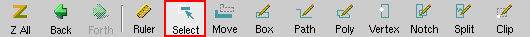
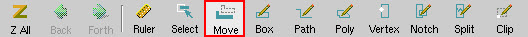
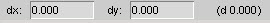

You can move one or more edges of a polygon
or a path.
Restrictions and Limitations
The following restrictions apply
when moving multiple edges:
Edges can
only be moved with other edges.
All selected edges to be
moved must be parallel.
Prerequisites
You
have a layout open in Calibre DESIGNrev that contains polygons or
paths.
Procedure
Select
the Edge check box in the Object Selection toolbar.
Click the Select button
in the Layout Viewer toolbar.

Click on
or near the edge of the path or polygon.
The tool automatically selects the edge closest to
the cursor when you click.
To select
multiple edges, press Ctrl while clicking on or near any additional
edges to select them.
Click the Move button
(or press “m”) in the Layout Viewer toolbar.

This displays the dx and dy fields in the lower-left corner of
the Calibre DESIGNrev window.

Use one of the following methods
to move the selected edges:
If you want to...
Do the following:
Use the mouse to move one or more edges
Use the left mouse button to drag the edge(s) to
the desired location. If multiple edges are selected, press and
hold Shift while moving the edges.
Enter coordinates to move the edges
Click in the dx text
box, type a positive or negative value, and press Enter to move
the selected edges in the x direction. Click in the dy text box,
type a positive or negative value, and press Enter to move the selected
edges in the y direction. Values are in database units (dbu).
Note:
If the edge you are moving is part of a cell that is referenced
multiple times in the layout, you are prompted as to whether you
want to clone the cell. Refer to “Editing in Context” for more information on this topic.